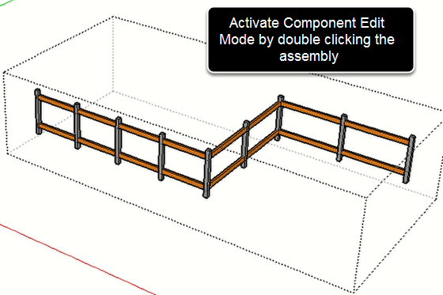
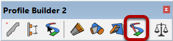
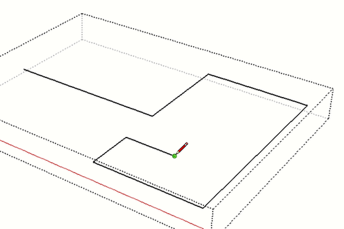
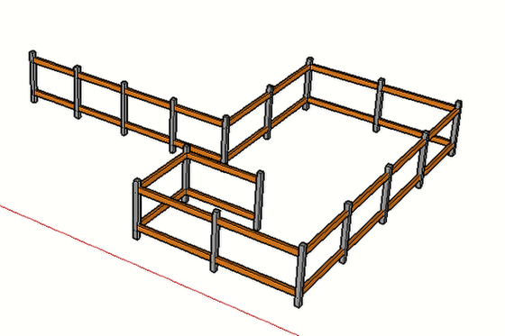

You must be inside 'Component / Group' edit mode prior to using this feature. If you are not inside a valid Profile Member or Assembly, the toolbar icon will be grayed and inactive.

Use the various drawing tools in SketchUp to edit the path.

The Profile Member or Assembly will be re-built to follow the new path.